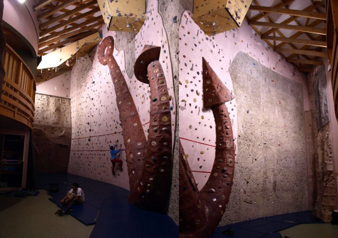

L'HISTOIRE DE 4+ C'EST D'ABORD LA PASSION
L’association 4+ est créée en 1986 par trois passionnés de grimpe. Dans la même année elle est affiliée à la FSGT (Fédération sportive et Gymnique du travail) et participe à la manifestation «Foutez-nous la paix» organisée par l’ESV (Club Omnisport de Vitry-sur-Seine). Son but est de regrouper tous les passionnés d’escalade et de sensations fortes pour leurs faire découvrir les bonnes pratiques sportives en montagne et son aspect socio-culturel.
En peu de temps l’association recrute une vingtaine d’adhérents puis une trentaine... La suite logique voit le lancement du projet de construction d’un mur d’escalade à Vitry ce qui permettra à chacun de pouvoir pratiquer régulièrement l’escalade en milieu urbain. Avec le soutien de la municipalité la construction du mur d'escalade de Vitry-sur-Seine voit le jour en 1991 et c’est aujourd’hui plus de 150 adhérents en Île-de-France qui peuvent dorénavant se retrouver la semaine en salle.
Peu de temps après le lancement du projet de construction du mur d'escalade de Vitry, des actions tout public sont menées avec des séances de découverte auprès des enfants de maternelles, des retraités sportifs et des jeunes de l'ALEF pour une pratique de réinsertion.
 ...Mais quatre plus c'est aussi une présence en milieu naturel.
...Mais quatre plus c'est aussi une présence en milieu naturel.